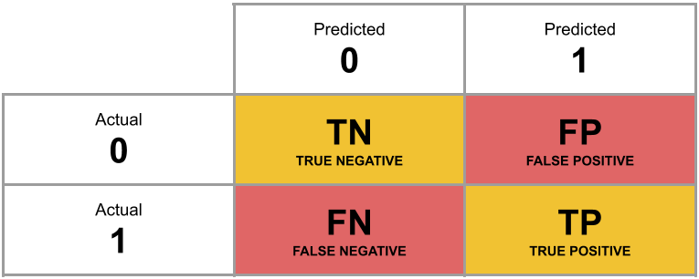

Week 10 Exercises: Logistic Regression
Odd Probability
- The probability of a coin landing on heads if 0.5, or 50%. What are the odds, and what are the log-odds?
- Last year’s Tour de France winner, Tadej Pogacar, was given odds of 11 to 4 by a popular gambling site (i.e., if we could run the race over and over again, for every 4 he won he would lose 11). Translate this into the implied probability of him winning.
Hints:
- \(odds = \frac{p}{1-p}\)
- See 10A#introducing-the-glm
Drunkdoor
Research Questions Is susceptibility to change blindness influenced by level of alcohol intoxication and perceptual load?
Method Researchers conducted a study in which they approached 120 people, recruited from within the vicinity of a number of establishments with licenses to sell alcohol to be consumed on-premises. Initially, experimenter A approached participants and asked if they were interested in participating in a short study, and obtained their written consent. While experimenter A subsequently talked each participant through a set of questions on multiple pieces of paper (with the pretense of explaining what the participant was required to do), experimenters B and C carrying a door passed between the participant and experimenter A, with experimenter C replacing A (as can be viewed in the video below).
Simons, D. J., & Levin, D. T. (1997). Change blindness. Trends in cognitive sciences, 1(7), 261-267.
The perceptual load of the experiment was manipulated via a) the presentation of the door and b) the papers held by the experimenters. For 60 of these participants, the door was painted with some detailed graffiti and had a variety of pieces of paper and notices attached to the side facing the participants. Additionally, for these participants, the experimenters handled a disorganised pile of 30 papers, with the top pages covered in drawings around the printed text. For the remaining 60, the door was a standard MDF construction painted a neutral grey, and the experimenters handled only 2 sheets of paper which had minimal printed text on them and nothing else.
Measures
After experimenters A and C had successfully swapped positions, the participant was asked (now by C) to complete small number of questions taking approximately 1 minute. Either after this set of questions, or if the participant made an indication that they had noticed the swap, the experimenters regrouped and the participant was explicitly asked whether they had noticed the swap.
Immediately after this, participants were breathalysed, and their blood alcohol content was recorded. In addition, participants’ age was recorded, as previous research suggests that change-blindness increases with age.
Data
The data can be downloaded from https://uoepsy.github.io/data/drunkdoor.csv.
A description of the variables included is presented below.
| variable | description |
|---|---|
| id | Unique ID number |
| bac | Blood Alcohol Content (BAC), A BAC of 0.0 is sober, while in the United States 0.08 is legally intoxicated, and above that is very impaired. BAC levels above 0.40 are potentially fatal. |
| age | Age (in years) |
| condition | Condition - Perceptual load created by distracting oject (door) and details and amount of papers handled in front of participant (Low vs High) |
| notice | Whether or not the participant noticed the swap (Yes = 1 vs No = 0) |
Age effects
To begin with, we’re going to ignore the research question, and just look at the relationship between age and whether or not participants noticed the person-switch.
Make a scatterplot of this relationship, and add to the plot geom_smooth(method="lm"). This will plot the regression line for a simple model of lm(notice ~ age).
Hint: It won’t look very nice!
Just visually following the line from the plot produced in the previous question, what do you think the predicted model value would be for someone who is aged 30?
What does this value mean?
Hint: There’s not really an answer to this.
Fit a logistic regression model investigating whether participants’ age predicts the log-odds of noticing the person they are talking to being switched out mid-conversation. Look at the summary() output of your model.
Hints:
- To fit a logistic regression model, we need to use
glm(), a slightly more general form oflm(). - The syntax is pretty much the same, but we need to add in a
familyat the end, to tell it that we are doing a binomial1 logistic regression.
- See 10A#fitting-glm-in-r
Based on your model output, complete the following sentence:
“Being 1 year older decreases _________ by 0.18.”
Hint: on what scale (probability, odds, log-odds) are we modelling linear associations?
To get this association into something that is (slightly) more easy to understand, exponentiate the coefficients from your model in order to translate them back from log-odds in to “odds ratios”. Provide an interpretation of what the resulting estimates mean.
Hints:
- The opposite of the natural logarithm
log()is the exponentialexp(). - See 10A#interpretation-of-coefficients
Based on your answer to the previous question, calculate the odds of noticing the swap for a one year-old (for now, forget about the fact that this experiment wouldn’t work on a 1 year old!)
And what about for a 40 year old?
Can you translate the odds back in to probabilities?
It’s possible to calculate predicted probabilities for a specific value of the predictor(s), but what would be nice is to see how the probability of noticing the swap changes with age.
The code below creates a dataframe with the variable age in it, which has the values 1 to 100. Can you use this object and the predict() function, along with your model, to calculate the predicted probabilities of the outcome (noticing the swap) for each year of age from 1 to 100?
Can you then plot this?
ages100 <- tibble(age = 1:100)Hints:
predict(model, newdata = ???)
- try seeing what happens to the plot when you change between:
predict(model, newdata = ???, type = "link")predict(model, newdata = ???, type = "response")
- 10A#visualising
Tackling the research question
Recall our research question, which we will now turn to:
Research Questions Is susceptibility to change blindness influenced by level of alcohol intoxication and perceptual load?
Try and make a mental list of the different relationships between variables that this question invokes, can you identify one variable as the ‘outcome’ or ‘response’ variable? (it often helps to think about the implicit direction of the relationship in the question)
In addition, are there known things that it might be useful to account for, so that you capture associations that are independent from differences due to these things (hint hint, what have you just been looking at?).
Think about our outcome variable and how it is measured. What type of data is it? Numeric? Categorical?
What type of distribution does it follow? For instance, do values vary around a central point, or fall into one of various categories, or follow the count of successes in a number of trials?
Think about our explanatory variable(s). Is there more than one? What type of variables are they? Do we want to model these together? Might they be correlated?
- Write a sentence describing the model you will fit. It might help to also describe each variable as you introduce it.
- Fit the model.
Hints:
Think of this as writing out the R code but in words.
For instance: glm(outcome ~ predictor1 + predictor2 + Predictor1:Predictor2, family = binomial) might be described as “Outcome (binary,”Level 1” vs “Level 2”) was modelled using logistic regression, predicted by Predictor1, Predictor2 and their interaction”
- Do you want BAC on the current scale, or could you transform it somehow?
- Is condition a factor? What is your reference level? Have you checked
contrasts(drunkdoor$condition)? (Remember that this will only work if you make it a factor first)
Compute 95% confidence intervals for the log-odds coefficients using confint(). Wrap the whole thing in exp() in order to convert all these back into odds and odds-ratios.
Try the sjPlot package and using tab_model(model) and plot_model(model, type = "est") on your model. What do you get?
Write up the results of the study.
Hints:
- Often when reporting odds ratios, it’s easiest to interpret them as simply “increased odds of
(OR = <??> [95% CI: , ])”. This saves a bit of hassle too! 😄
Dog people/Cat people
USMR 2022 Data
The data from the USMR 2022 survey (now closed) can be found at https://uoepsy.github.io/data/usmr2022.csv.
note, this is the survey data just from USMR this year, not other students on other courses or in previous years
People often talk about personality differences between “cat people” and “dog people” (e.g. if you’re more introverted then you’re more likely to be a cat person).
In our survey, we forced you to choose between “cat” and “dog”, and we also measured a bunch of personality traits from a set of 50 questions (these were aggregated up into scores for ‘extraversion’, ‘conscientiousness’, and so on).
Fit a model that tries to predict whether someone is a cat- or dog- person, based on aspects of their personality.
Hints:
- your outcome variable is currently not 0 and 1, but “cat” and “dog”. Remember how R prefers to think of categories - as
factors.
Using GLM to classify
A table of predicted outcome vs observed outcome sometimes gets referred to as a confusion matrix, and we can think of the different cells in general terms (Figure 1).
Another way to think about how our model is fitted is that it aims to maximise (TP + TN)/n, or, put another way, to minimise (FP+FN)/n. Which is equivalent to the good old idea of minimising sums of squares (where we minimise the extend to which the predicted values differ from the observed values).

- Add new column to the survey dataset which contains the predicted probability of being a cat/dog person for each observation.
- Then, using
ifelse(), add another column which is these predicted probabilities translated into the predicted binary outcome (0 or 1) based on whether the probability is greater than >.5.
- Create a two-way contingency table of the predicted outcome and the observed outcome.
- What proportion of observations are correctly predicted?
Hint:
- you don’t need the
newdataargument forpredict()if you want to use the original data the model was fitted on.
- if there are NAs in any of the variables in your model (predictors or outcome), then the number of rows in your data will be greater than the number of model predictions.
- if you want a handy function which might help with this, check out what the broom package has to offer. What does
augment(model, type.predict = "response")do?
- if you want a handy function which might help with this, check out what the broom package has to offer. What does
Optional Extra: Red and White
People are a lot more difficult to predict than something like, say, the colour of different wines.
You can download a dataset of 6497 different wines (1599 red, 4898 white) from https://uoepsy.github.io/data/usmr_wines.csv.
It contains information on various physiochemical properties such as pH, a measure of level of sulphates, residual sugar, citric acid, volatile acidity and alcohol content, and also quality ratings from a sommelier (wine expert). All the wines are vinho verde from Portugal, and the data was collected between 2004 and 2007.
Build a model that predicts the colour of wine based on all available information.
How accurately can it predict wine colours?
Hints:
glm(outcome ~ ., data = mydata)is a shorthand way of putting all variables in the data in as predictors.- Generally speaking, this question doesn’t reflect how we do research in psychology. Ideally, we would have a theoretical question that motivates the inclusion (and testing of) specific predictors.
Footnotes
In this case it happens to be the special case of a binomial where \(n=1\), which sometimes gets referred to as ‘binary logistic regression’↩︎